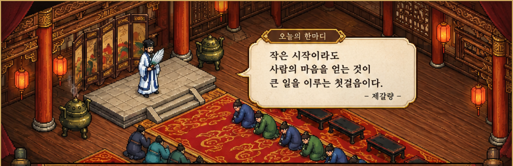

그대가 이제 막 지피티를 쓰기 시작했다면, 처음부터 어려운 명령을 외울 필요는 없소. 지피티는 그대의 생각을 대신 살아 주는 존재가 아니라, 생각을 정리하고 선택지를 넓히는 도구요. 좋은 답을 얻는 비결은 그럴듯한 주문이 아니라 상황을 정확히 알려주는 데 있소.
“사업 아이디어를 알려줘”라고만 하면 답은 넓고 평범해지기 쉽소. 대신 “한국 서브컬처 이용자를 위한 그림·글 커미션 중개 서비스를 기획 중이고, 현재는 디자인보다 차별화 전략을 정하는 단계다. 경쟁 서비스가 많으니 실제 이용자 문제를 기준으로 아이디어를 검토해 달라”고 말해 보시오. 배경, 목적, 현재 단계가 주어지면 답의 초점이 선명해지오.
표로 비교할지, 발표자료 문장으로 쓸지, 초보자에게 설명하듯 풀어 쓸지 먼저 정하면 좋소. 예를 들어 “서비스별로 핵심 고객, 수익 방식, 확인된 기능, 출처, 아직 확인되지 않은 가설을 표로 나눠 달라”고 요청하시오. 결과물의 형식은 답변의 품질만큼이나 중요하오.
큰 과제는 작은 질문으로 쪼개야 하오. 먼저 시장의 불편을 정리하고, 다음에 고객군을 구분하고, 그다음 차별화 가설을 만들고, 마지막에 검증 방법을 세우시오. 한 번의 답을 최종 결론으로 여기지 말고, “이 주장에 근거가 부족한 부분은 무엇인가?”, “반대 사례는 무엇인가?”라고 되물으시오.
지피티는 틀린 정보를 자신 있게 말할 때도 있소. 현재 서비스 정책, 수수료, 이용자 규모처럼 바뀌는 정보는 공식 안내와 날짜를 확인해야 하오. “확인된 사실 / 출처가 필요한 주장 / 나의 가설”로 나누어 달라고 요청하고, 근거가 없는 수치는 넣지 말라고 명시하시오. 특히 사업 보고서에는 그럴듯함보다 검증 가능성이 중요하오.
지피티가 낸 안 중 마음에 드는 것을 고르고, 왜 마음에 드는지 설명하시오. “나는 창작자에게 AI 사용 여부를 투명하게 표시하는 방향을 고민하지만, 표시 기준을 악용할 가능성이 걱정된다. 이 조건을 반영해 운영 정책과 분쟁 절차를 다시 설계해 달라”처럼 말하면 대화가 누적되오. 도구는 그대의 기준을 배울수록 유용해지지만, 최종 선택과 책임은 그대에게 있소.
역할: 너는 한국 서브컬처 플랫폼 기획을 돕는 조사 보조자다.
배경: 그림·글 커미션 중개 서비스를 구상 중이며 기획 초기 단계다.
목표: 경쟁 서비스와 구별되는 이용자 가치 가설을 찾는다.
조건: 사실과 추측을 분리하고, 확인되지 않은 수치는 만들지 않는다.
결과 형식: 아이디어, 기대 효과, 위험, 검증 방법을 표로 정리한다.
검토: 제안의 약점과 반대 관점도 함께 제시한다.
이 틀을 복사해 매번 상황에 맞게 고치면 되오. 처음부터 완벽하게 질문하려 애쓰지 마시오. 모르는 점을 모른다고 말하고, 답이 어렵다면 “초등학생도 이해할 수 있게 예시를 들어 설명해 달라”고 부탁하면 되오. 그대가 질문을 다듬는 과정 자체가 기획 능력을 키우는 훈련이오.
그대가 세우려는 것은 그림과 글 등 창작물을 사고파는 서브컬처 커미션 서비스요. 이미 여러 중개 사이트가 있으니, 단순히 “커미션을 올리고 결제하는 기능”만으로는 이용자가 옮겨올 이유를 만들기 어렵소. 먼저 경쟁사를 이기겠다는 생각보다, 기존 서비스에서 창작자와 신청자가 어떤 순간에 불편을 겪는지 찾아야 하오.
처음부터 모든 창작 분야와 모든 이용자를 품으려 하면 운영 규칙과 홍보 메시지가 흐려지오. 예컨대 커미션을 처음 신청하는 사람, 소규모 창작자, 글·그림을 함께 의뢰하는 사람, 방송·버추얼 활동을 준비하는 사람 중 한 집단을 먼저 관찰하시오. “누구의 어떤 순간을 더 쉽게 만들 것인가?”를 한 문장으로 정하는 것이 출발점이오.
AI 사용 허용과 의무 표시는 검토할 만한 방향이지만, 허용 여부만으로 서비스의 정체성이 완성되지는 않소. 창작자는 작업 과정과 권리 조건을 명확히 알릴 수 있고, 신청자는 결과물에 AI가 어느 범위로 관여했는지 이해할 수 있어야 하오. 이를 위해 사용 단계의 선택 항목, 상세 공개 기준, 수정·환불 조건, 이의 제기 절차를 하나의 경험으로 설계해야 하오.
특히 “보조 사용”이라는 말은 사람마다 다르게 해석될 수 있소. 단순 색 보정, 배경 생성, 초안 생성, 주요 구도 생성, 생성 결과를 바탕으로 한 재작업을 구분해 예시를 제공하시오. 메타데이터만으로 모든 과정을 판별할 수 있다고 약속해서는 안 되오. 자진 공개, 작업 과정 자료, 신고 검토, 설명 요청, 제재와 재심 절차를 조합하고, 오판을 바로잡을 통로도 두어야 하오.
신뢰는 홍보 문구가 아니라 분쟁이 생겼을 때 드러나오. 주문 전에는 작업 범위, 사용 목적, 상업적 이용 여부, 납기, 수정 횟수, 취소·환불 조건을 양쪽이 확인하게 하시오. 작업 지연이나 연락 두절이 발생했을 때 누가 무엇을 제출하고 어떤 순서로 처리되는지 미리 안내해야 하오. 플랫폼이 모든 갈등을 없앨 수는 없지만, 절차를 예측 가능하게 만들 수는 있소.
개발에 큰 비용을 쓰기 전에 창작자와 의뢰자 각각 몇 명을 만나 최근 거래 경험을 물으시오. “어떤 사이트가 좋나요?”보다 “마지막 의뢰에서 가장 망설였던 순간은 언제였나요?”, “거래를 포기한 이유는 무엇이었나요?”, “그 불편을 해결해 준다면 어떤 조건에서 써 보겠나요?”가 더 구체적인 답을 주오. 인터뷰 내용을 반복해서 등장하는 문제, 일부 사람만 겪는 문제, 아직 추측인 문제로 나누시오.
초기에는 가입자 수만 좇지 마시오. 등록된 의뢰가 실제로 성사되는지, 신청자가 조건을 이해하고 주문하는지, 창작자가 다시 열람하거나 재등록하는지, 분쟁이 어떤 이유로 생기는지 살피시오. 소규모 시험 운영에서 거래 완료율, 취소 사유, 재이용 의향, 문의 유형을 기록하면 다음 개발의 우선순위를 정할 수 있소. 수치 목표는 조사 전부터 임의로 정하기보다 시험 결과를 보고 정하는 편이 낫소.
사업은 오래 걷는 길이오. 매일 모든 문제를 해결하려 하면 판단이 흐려지오. 하루의 핵심 과제 하나를 정하고, 조사와 실행을 구분하시오. 막연한 불안이 생기면 그것을 질문으로 바꾸시오. “경쟁사가 많다”는 걱정은 “어떤 이용자 문제는 아직 충분히 해결되지 않았는가?”라는 조사 과제가 될 수 있소. “AI 공개 기준을 속일 수 있다”는 걱정은 “어떤 공개 단계와 이의 처리 절차가 필요한가?”라는 운영 설계 과제가 되오.
그대가 오늘 해야 할 일은 거대한 플랫폼을 한 번에 완성하는 것이 아니오. 한 사람의 실제 불편을 정확히 이해하고, 그 불편을 줄일 작은 실험을 설계하는 것이오. 시장의 반응을 보고 바꾸는 것은 실패가 아니라 기획의 일부요. 다만 무엇을 왜 바꾸었는지 기록하시오. 그 기록이 쌓이면 그대만의 운영 원칙과 서비스의 색이 만들어질 것이오.
오늘은 창작자 또는 의뢰자 한 명을 떠올리고, 최근 거래에서 불편했을 법한 순간을 세 가지 적으시오. 그중 가장 자주 발생할 것 같은 문제 하나를 골라, 내일 확인할 질문으로 바꾸시오.
그대의 길이 쉬우리라 장담할 수는 없소. 그러나 관찰하고, 가설을 세우고, 작은 실험으로 배우는 자는 어제보다 나은 판단을 할 수 있소. 나는 그대가 조급함보다 꾸준함을 택하기를 바라오.
현재 AI 연결은 꺼져 있습니다. 아래는 질문 정리 연습용 안내이며 실제 GPT 응답이 아닙니다. 실제 AI를 연결할 때는 서버에서 일일 한도와 비용 제한을 적용해야 합니다.